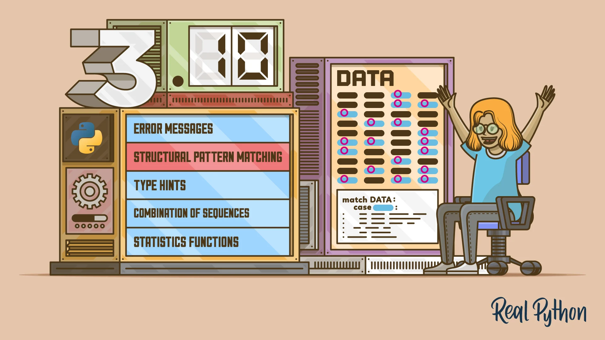

Python 语言旨在使复杂任务变得简单，所以更新迭代的速度比较快，需要我们紧跟其步伐！
新版本的发布，总是会伴随着新特性和新功能的产生，我们在升级版本之前首先就是需要了解和属性这些要点，才可能会在之后的编程中灵活的使用到。迫不及待，蓄势待发，那现在就让我们开始吧！
- 基本都是参考董老师的博客，可以通过文末链接查看原文。

1. PEP 604
New Type Union Operator
在之前的版本想要声明类型包含多种类型时，需要使用 Union[] 来包含多个，现在可以直接使用 | 符号完成。
- 旧版本的写法
from typing import Union
def square(number: Union[int, float]) -> Union[int, float]:
return number ** 2
- 新版本的写法
def square(number: int | float) -> int | float:
return number ** 2
- 可以使用在
isinstance和issubclass中
In : isinstance('s', (int, str))
Out: True
In : isinstance(1, (int, str))
Out: True
In : isinstance('s', int | str)
Out: True
In : isinstance(1, int | str)
Out: True
2. PEP 613
TypeAlias
有时候我们想要自定义一个类型，那么就可以创建一个别名(Alias)来实现。但是，对于类型检查器(Type Checker)来说，它无法分辨这是一个类型别名，还是普通的赋值，现在我们可以通过引入 TypeAlias 就很容易分辨了。
- 之前的写法
Board = List[Tuple[str, str]]
- 新版的写法
from typing import TypeAlias
Board:TypeAlias = List[Tuple[str, str]] # 这是一个类型别名
Board = 2 # 这是一个模块常量
3. PEP 647
User-Defined Type Guards
在当代静态检查工具 (如 typescript、mypy 等) 里面会有一个叫做 Type narrowing 功能，如其名字，中文叫做 类型收窄。就是当某个参数类型本来可以符合多个类型，但是在特定的条件里可以让类型范围缩小，直接限定到更小范围的某个 (些) 类型上。
In : def show_type(obj: int | str): # 参数obj是int或者str
...: if isinstance(obj, int): # 实现Type narrowing，mypy确认obj是int
...: return 'int'
...: return 'str' # 由于前面限定了int，所以这里mypy会确认obj是str
...:
In : show_type(1)
Out: 'int'
In : show_type('1')
Out: 'str'
- 发现问题 - 存在缺陷
更准确的了解对象的类型对于 mypy 是非常友好的，检查的结论也会更准确，类型收窄在一些场景下会有问题。
In : def is_str(obj: object) -> bool:
...: return isinstance(obj, str)
...:
...:
...: def to_list(obj: object) -> list[str]:
...: if is_str(obj):
...: return list(obj)
...: return []
...:
In : def is_str(obj: object) -> bool:
...: return isinstance(obj, str)
...:
...:
...: def to_list(obj: object) -> list[str]:
...: if is_str(obj):
...: return list(obj)
...: return []
...:
In : to_list('aaa')
Out: ['a', 'a', 'a']
In : to_list(111)
Out: []
这段代码比 PEP 里面提到的更简单，它们都是正确的代码，类型注释也有问题。但是运行 mypy 的话，会提示报错信息。在 2 个函数中 obj 由于不确定对象类型，所以用了 object，事实上to_list 只会对 obj 为 str 类型做处理。本来 if is_str(obj) 会让类型收窄，但是 由于被拆分成函数，isinstance 并没有在这里成功收窄。
➜ mypy wrong_to_list.py
wrong_to_list.py:7: error: No overload variant of "list" matches argument type "object"
wrong_to_list.py:7: note: Possible overload variants:
wrong_to_list.py:7: note: def [_T] list(self) -> List[_T]
wrong_to_list.py:7: note: def [_T] list(self, Iterable[_T]) -> List[_T]
Found 1 error in 1 file (checked 1 source file)
- 在新版本提供了用户自定的
Type Guards来解决
本来返回值的类型是 bool，现在我们指定成了 TypeGuard[str]，让 mypy 能理解它的类型。其实换个角度，你可以理解为 TypeGuard[str] 是一个带着类型声明的 bool 的别名，请仔细理解这句话。
from typing import TypeGuard
def is_str(obj: object) -> TypeGuard[str]:
return isinstance(obj, str)
➜ mypy right_to_list.py
Success: no issues found in 1 source file
4. PEP 612
Parameter Specification Variables
Python 的类型系统对于 Callable 的类型 (如函数) 的支持很有限，它只能注明这个 Callable 的类型，但是对于函数调用时的参数是无法传播的。
- 这个问题主要存在于装饰器用法上
join 接收的参数值应该是字符串列表，但是 mypy 没有正确验证最后这个 print(join([1, 2]))。因为在 log 装饰器中 inner 函数中 args 和 kwargs 的类型都是 Any，这造成调用时选用的参数的类型没有验证，说白了怎么写都可以。
from collections.abc import Callable
from typing import Any, TypeVar
R = TypeVar('R')
def log(func: Callable[..., R]) -> Callable[..., R]:
def inner(*args: Any, **kwargs: Any) -> R:
print('In')
return func(*args, **kwargs)
return inner
@log
def join(items: list[str]):
return ','.join(items)
print(join(['1', '2'])) # 正确用法
print(join([1, 2])) # 错误用法，mypy应该提示类型错误
- 新的版本中可以使用
ParamSpec来解决
通过使用 typing.ParamSpec，inner 的参数类型直接通过 P.args 和 P.kwargs 传递进来，这样就到了验证的目的。
typing.ParamSpec 帮助我们方便【引用】位置和关键字参数，而这个 PEP 另外一个新增的typing.Concatenate 是提供一种添加、删除或转换另一个可调用对象的参数的能力。
from typing import TypeVar, ParamSpec
R = TypeVar('R')
P = ParamSpec('P')
def log(func: Callable[P, R]) -> Callable[P, R]:
def inner(*args: P.args, **kwargs: P.kwargs) -> R:
print('In')
return func(*args, **kwargs)
return inner
➜ mypy right_join.py
right_join.py:22: error: List item 0 has incompatible type "int"; expected "str"
right_join.py:22: error: List item 1 has incompatible type "int"; expected "str"
Found 2 errors in 1 file (checked 1 source file)
我能想到比较常见的添加参数，是指【注入】类型的装饰器。join 函数虽然有 2 个参数，但是由于第一个参数 logger 是在 with_logger 装饰器中【注入】的，所以在使用时只需要传递 items 参数的值即可。
import logging
from collections.abc import Callable
from typing import TypeVar, ParamSpec, Concatenate
logging.basicConfig(level=logging.NOTSET)
R = TypeVar('R')
P = ParamSpec('P')
def with_logger(func: Callable[Concatenate[logging.Logger, P], R]) -> Callable[P, R]:
def inner(*args: P.args, **kwargs: P.kwargs) -> R:
logger = logging.getLogger(func.__name__)
return func(logger, *args, **kwargs)
return inner
@with_logger
def join(logger: logging.Logger, items: list[str]):
logger.info('Info')
return ','.join(items)
print(join(['1', '2']))
print(join([1, 2]))
除了添加，删除和转换参数也可用 Concatenate，再看一个删除参数的例子。使用 remove_first 装饰器后，传入的第一个参数会被忽略，所以 add(1, 2, 3) 其实是在计算 add(2, 3)。注意理解这个 Concatenate 在的位置，如果是新增，那么 Concatenate 加在装饰器参数的 Callable 的类型声明里，如果是删除，加在返回的 Callable 的类型声明里。
5. PEP 618
zip 函数的参数
相信每个工作经验多的 Python 开发都经历过这个坑，当然参数内的元素长度不同时，长度长的那部分会被忽略，在没有任何提示的情况下，其实本来它的文档中提到了。
In : list(zip(['a', 'b', 'c'], [1, 2]))
Out: [('a', 1), ('b', 2)]
但是对于大部分开发者来说没人真的能注意这个文档说明，这个问题是很隐性的，需要开发者了解 zip 的问题。而新的版本在参数内元素长度不同时，使用 strict=True 会报错。
In : list(zip(['a', 'b', 'c'], [1, 2], strict=True))
---------------------------------------------------------------------------
ValueError Traceback (most recent call last)
Input In , in <cell line: 1>()
----> 1 list(zip(['a', 'b', 'c'], [1, 2], strict=True))
ValueError: zip() argument 2 is shorter than argument 1
6. PEP 626
更好的错误提示
在官方中列举了一些之前版本中不够明显友好的错误信息例子，这个版本集中的处理了它们。下面是：同样是 SyntaxError 是不是新版本的提示更容易理解呢？不仅提示错误类型，还给了提示。
- 旧的写法
In : print("Hello, World!)
File "<ipython-input-7-bc0808c61f64>", line 1
print("Hello, World!)
^
SyntaxError: EOL while scanning string literal
- 新的写法
In : print("Hello, World!)
Input In []
print("Hello, World!)
^
SyntaxError: unterminated string literal (detected at line 1)
- 旧的写法
In : if b = 1: pass
File "<ipython-input-8-e4cfea4b3624>", line 1
if b = 1: pass
^
SyntaxError: invalid syntax
- 新的写法
In : if b = 1: pass
Input In []
if b = 1: pass
^
SyntaxError: invalid syntax. Maybe you meant '==' or ':=' instead of '='?
7. PEP 634-636
Match-Case: Structural Pattern Matching: Specification >Match-Case: Structural Pattern Matching: Motivation and Rationale >Match-Case: Structural Pattern Matching: Tutorial
很多 Python 核心开发者都认为 Python 不需要添加 switch-case 这种语法，因为可以通过 if/elif/else 实现一样的效果。这个新的语法中文叫做结构模式匹配 (Structural Pattern Matching)，由于新特性内容很多所以有三个 PEP 介绍它
- PEP 634：介绍
match语法和支持的模式 - PEP 635：解释语法这么设计的理由
- PEP 636：一个教程，介绍概念、语法和语义
match 后面跟要匹配的变量，case 后面跟不同的条件，之后是符合条件需要执行的语句。最后一个 case 加下划线表示缺省匹配，如果前面的条件没有匹配上就跑到这个 case 里面执行，相当于之前的 else。
def http_error(status):
match status:
case 400:
return 'Bad request'
case 401:
return 'Unauthorized'
case 403:
return 'Forbidden'
case 404:
return 'Not found'
case _:
return 'Unknown status code'
但是 match-case 语法能做的事情远超 C/Go 这些语言里的 switch-case 语法，它其实是 Scala/Erlang 等语言里面的 match-case 语法，它支持复杂的模式匹配，接下来我会通过多个模式的例子详细演示这个新的语法的灵活性和 pythonic。
- [1] 字面量 (Literal) 模式
上面的例子就是一个字面量模式，使用 Python 自带的基本数据结构，如字符串、数字、布尔值和 None。
match number:
case 0:
print('zero')
case 1:
print('one')
case 2:
print('two')
- [2] 捕捉 (Capture) 模式
可以匹配 单个 表达式的赋值目标。如果 greeting 非空，就会赋值给 name，但是要注意，如果 greeting 为空会抛 NameError 或者 UnboundLocalError 错误，因为 name 在之前没有定义过。
def capture(greeting):
match greeting:
case "":
print("Hello!")
case name:
print(f"Hi {name}!")
if name == "Santa":
print('Match')
In : capture('Alex')
Hi Alex!
In : capture('Santa')
Hi Santa!
Match
In : capture('')
Hello!
---------------------------------------------------------------------------
UnboundLocalError Traceback (most recent call last)
Input In [4], in <cell line: 1>()
----> 1 capture('')
Input In [1], in capture(greeting)
1 def capture(greeting):
2 match greeting:
3 case "":
4 print("Hello!")
5 case name:
6 print(f"Hi {name}!")
----> 7 if name == "Santa":
8 print('Match')
UnboundLocalError: local variable 'name' referenced before assignment
- [3] 序列 (Sequence) 模式
可以在 match 里使用列表或者元组格式的结果，还可以按照 PEP 3132 – Extended Iterable Unpacking 里面使用 first, *rest = seq模式来解包。
这个 match 条件第一个元素需要是 1，否则匹配失败。第一个 case 用的是列表和解包，第二个 case 用的是元组，其实和列表语义一样，第三个还是列表
In : def sequence(collection):
...: match collection:
...: case 1, [x, *others]:
...: print(f"Got 1 and a nested sequence: {x=}, {others=}")
...: case (1, x):
...: print(f"Got 1 and {x}")
...: case [x, y, z]:
...: print(f"{x=}, {y=}, {z=}")
...:
In : sequence([1])
In : sequence([1, 2])
Got 1 and 2
In : sequence([1, 2, 3])
x=1, y=2, z=3
In : sequence([1, [2, 3]])
Got 1 and a nested sequence: x=2, others=[3]
In : sequence([1, [2, 3, 4]])
Got 1 and a nested sequence: x=2, others=[3, 4]
In : sequence([2, 3])
In : sequence((1, 2))
Got 1 and 2
如果 case 后接的模式是单项的可以去掉括号，可以这么写。但是注意，其中 case 1, [x, *others] 是不能去掉括号的，去掉了解包的逻辑就变了，要注意。
def sequence2(collection):
match collection:
case 1, [x, *others]:
print(f"Got 1 and a nested sequence: {x=}, {others=}")
case 1, x:
print(f"Got 1 and {x}")
case x, y, z:
print(f"{x=}, {y=}, {z=}")
- [4] 通配符 (Wildcard) 模式
使用单下划线 _ 匹配任何结果，**但是不绑定 (不赋值到某个或者某些变量上)**，最后的 case _ 就是通配符模式，当然还可以有多个匹配，在前面说到的序列模式也支持 _。使用通配符需求注意逻辑顺序，把范围小的放在前面，范围大的放在后面，防止不符合预期。
def http_error(status):
match status:
... # 省略
case _:
return 'Unknown status code'
In : def wildcard(data):
...: match data:
...: case [_, _]:
...: print('Some pair')
...:
In : wildcard(None)
In : wildcard([1])
In : wildcard([1, 2])
Some pair
In : def sequence2(collection):
...: match collection:
...: case ["a", *_, "z"]:
...: print('matches any sequence of length two or more that starts with "a" and ends with "z".')
...: case (_, _, *_):
...: print('matches any sequence of length two or more.')
...: case [*_]:
...: print('matches a sequence of any length.')
...:
In : sequence2(['a', 2, 3, 'z'])
matches any sequence of length two or more that starts with "a" and ends with "z".
In : sequence2(['a', 2, 3, 'b'])
matches any sequence of length two or more.
In : sequence2(['a', 'b'])
matches any sequence of length two or more.
In : sequence2(['a'])
matches a sequence of any length.
- [5] 恒定值 (constant value) 模式
这种模式，主要匹配常量或者 enum 模块的枚举值。
In : class Color(Enum):
...: RED = 1
...: GREEN = 2
...: BLUE = 3
...:
In : class NewColor:
...: YELLOW = 4
...:
In : def constant_value(color):
...: match color:
...: case Color.RED:
...: print('Red')
...: case NewColor.YELLOW:
...: print('Yellow')
...: case new_color:
...: print(new_color)
...:
In : constant_value(Color.RED) # 匹配第一个case
Red
In : constant_value(NewColor.YELLOW) # 匹配第二个case
Yellow
In : constant_value(Color.GREEN) # 匹配第三个case
Color.GREEN
In : constant_value(4) # 常量值一样都匹配第二个case
Yellow
In : constant_value(10) # 其他常量
10
这里注意，因为 case 具有绑定的作用，所以不能直接使用 YELLOW 这种常量，这样是错误的。
YELLOW = 4
def constant_value(color):
match color:
case YELLOW:
print('Yellow')
- [6] 映射 (Mapping) 模式
其实就是 case 后支持使用字典做匹配。
In : def mapping(config):
...: match config:
...: case {'sub': sub_config, **rest}:
...: print(f'Sub: {sub_config}')
...: print(f'OTHERS: {rest}')
...: case {'route': route}:
...: print(f'ROUTE: {route}')
...:
In : mapping({})
In : mapping({'route': '/auth/login'}) # 匹配第一个case
ROUTE: /auth/login
# 匹配有sub键的字典，值绑定到sub_config上，字典其他部分绑定到rest上
In : mapping({'route': '/auth/login', 'sub': {'a': 1}}) # 匹配第二个case
Sub: {'a': 1}
OTHERS: {'route': '/auth/login'}
- [7] 类 (Class) 模式
case 后支持任何对象做匹配，这是因为对于匹配来说，位置需要确定，所以需要使用位置参数来标识。
In : def class_pattern(obj):
...: match obj:
...: case Point(x=1, y=2):
...: print(f'match')
...:
In : class_pattern(Point(1, 2))
match
另外一个解决这种自定义类不用位置参数的匹配方案，使用 __match_args__ 返回一个位置参数的数组，就像这样。这里的 Point2 使用了标准库的 dataclasses.dataclass 装饰器，它会提供 __match_args__ 属性，所以可以直接用。
In : class Point:
...: __match_args__ = ('x', 'y')
...:
...: def __init__(self, x, y):
...: self.x = x
...: self.y = y
...:
In : from dataclasses import dataclass
In : @dataclass
...: class Point2:
...: x: int
...: y: int
...:
In : def class_pattern(obj):
...: match obj:
...: case Point(x, y):
...: print(f'Point({x=},{y=})')
...: case Point2(x, y):
...: print(f'Point2({x=},{y=})')
...:
In : class_pattern(Point(1, 2))
Point(x=1,y=2)
In : class_pattern(Point2(1, 2))
Point2(x=1,y=2)
- [8] 组合 (OR) 模式
可以使用 | 将多个字面量组合起来表示或的关系，| 可以在一个 case 条件内存在多个，表示多个或关系。
def or_pattern(obj):
match obj:
case 0 | 1 | 2: # 0,1,2三个数字匹配
print('small number')
case list() | set(): # 列表或者集合匹配
print('list or set')
case str() | bytes(): # 字符串或者bytes符合
print('str or bytes')
case Point(x, y) | Point2(x, y): # 借用之前的2个类，其中之一符合即可
print(f'{x=},{y=}')
case [x] | x: # 列表且只有一个元素或者单个值符合
print(f'{x=}')
这里注意一下，由于匹配顺序，case [x] | x 这句中的 [x] 是不会被触发的，另外 x 不能是集合、字符串、byte 等类型，因为在前面的条件中会被匹配到不了这里。另外在 Python 里是没有表示 AND 关系的 case 语法的。
In : or_pattern(1)
small number
In : or_pattern(2)
small number
In : or_pattern([1])
list or set
In : or_pattern({1, 2})
list or set
In : or_pattern('sss')
str or bytes
In : or_pattern(b'sd')
str or bytes
In : or_pattern(Point(1, 2))
x=1,y=2
In : or_pattern(Point2(1, 2))
x=1,y=2
In : or_pattern(4)
x=4
In : or_pattern({})
x={}
- [9] AS 模式
AS 模式在早期其实是海象 (Walrus) 模式，后来讨论后发现使用 as 关键字可以让这个语法更有优势。需要注明一下，这里面的 [0, int() as i] 是一种子模式，也就是在模式中包含模式: [0, int() as i] 是 case 匹配的序列模式，而其中 int() as i 是子模式，是 AS 模式。
In : def as_pattern(obj):
...: match obj:
...: case str() as s:
...: print(f'Got str: {s=}')
...: case [0, int() as i]:
...: print(f'Got int: {i=}')
...: case [tuple() as tu]:
...: print(f'Got tuple: {tu=}')
...: case list() | set() | dict() as iterable:
...: print(f'Got iterable: {iterable=}')
...:
...:
In : as_pattern('sss')
Got str: s='sss'
In : as_pattern([0, 1])
Got int: i=1
In : as_pattern([(1,)])
Got tuple: tu=(1,)
In : as_pattern([1, 2, 3])
Got iterable: iterable=[1, 2, 3]
In : as_pattern({'a': 1})
Got iterable: iterable={'a': 1}
- [10] 向模式添加条件
另外模式还支持加入 if 判断 (叫做 guard)，这样可以让匹配作进一步判断，相当于实现了某个程度的 AND 效果。
In : def go(obj):
...: match obj:
...: case ['go', direction] if direction in ['east', 'north']:
...: print('Right way')
...: case direction if direction == 'west':
...: print('Wrong way')
...: case ['go', _] | _:
...: print('Other way')
...:
In : go(['go', 'east']) # 匹配条件1
Right way
In : go('west') # 匹配条件2
Wrong way
In : go('north') # 匹配默认条件
Other way
In : go(['go', 'west']) # 匹配默认条件
Other way
8. BPO 12782
新的上下文管理器语法
在之前的版本，有时候我们想要在一个 with 里面放多个上下文，放在一行很长，一个常见的方式是使用反斜杠，可以把 open 对齐。但是这样写，会让 pep8、black 等代码检查工具报错：它们都认为不应该使用反斜杠显式续行。
- 之前的写法
In : with open('input', mode='rb') as input, \
...: open('output', mode='rb') as output:
...: ...
...:
- 新的写法
In : with (
...: open('input', mode='rb') as input,
...: open('output', mode='rb') as output
...: ):
...: ...
...:
现在可以给这些上下文管理器加个括号就完美了，其实就是可以使用 with 把多个上下文管理器 (Context Manager) 用括号括起来。
9. Note
主要介绍，模块新增特性，分析其用途和用法。
- [1] itertools.pairwise
其是把一个可迭代对象中的元素按照顺序，两个挨着的元素放一组的形式返回迭代器。在之前的版本中可以使用 more-itertools 这个包，现在已经把它加入到标准库了。
In : list(pairwise([1, 2, 3, 4, 5]))
Out: [(1, 2), (2, 3), (3, 4), (4, 5)]
In : list(pairwise('ABCDE'))
Out: [('A', 'B'), ('B', 'C'), ('C', 'D'), ('D', 'E')]
- [2] contextlib.aclosing
在之前已经介绍过标准的 contextlib.closing 装饰器，而 contextlib.aclosing 其实就是 async 的版本罢了。如官方介绍，它其实的作用是实现下面的逻辑。
使用 Python 读写文件一个好的习惯是操作完成后应该要关闭文件句柄，内置的 open 配合 with 是一个很好地实践。它的原理是在块代码执行完成后，会通过调用 ff.__exit__ 自动关闭文件句柄
In : with open('new.txt', 'w') as f:
...: f.write('A\n')
...:
In : ff = open('new.txt', 'w')
In : ff.closed
Out: False
In : ff.__exit__() # with就会调用它
In : ff.closed
Out: True
但是这里要注意，不是所有的 open 方法都原生支持 with (或者说提供 __exit__ 以及 __enter__ 这个方法)，当然还有其他类型的操作也需要被确保关闭 (即便发生了异常)。事实上，一般标准库或者知名项目都会支持 with 语法，但是当自己写或者公司项目里就可能没有了，例如我这样定义一个类：
In : class Database:
...: def close(self):
...: print('Closed')
...:
In : with Database() as d:
...: ...
...:
---------------------------------------------------------------------------
AttributeError Traceback (most recent call last)
<ipython-input-23-f0ea085f7488> in <module>
----> 1 with Database() as d:
2 ...
3
AttributeError: __enter__
所以，可以使用 contextlib.closing 包装一下，而 contextlib.aclosing 其实就是 asyncio 的版本。
In : import contextlib
In : with contextlib.closing(Database()) as d:
...: ...
...:
Closed
from contextlib import aclosing
async with aclosing(my_generator()) as values:
async for value in values:
if value == 42:
break
- [3] contextlib.AsyncContextDecorator
在 Python3.2 时加入了 contextlib.ContextDecorator，它是 contextlib.contextmanager 的基础，如类名的表达，它的作用让上下文管理器能用作装饰器。
# 最基本的不带参数的上下文管理器
class mycontext:
def __enter__(self):
print('Starting')
return self
def __exit__(self, *exc):
print('Finishing')
return False
# 可以使用with语法这么用
In : with mycontext():
...: print('Inner')
...:
Starting
Inner
Finishing
如果你想把这个上下文的管理改成装饰器怎么办呢？只需要让 mycontext 继承 contextlib.ContextDecorator 这个基类就可以了，是不是很方便？所以 contextlib.AsyncContextDecorator 其实就是 asyncio 的版本。
In : class mycontext(contextlib.ContextDecorator): # 注意这里继承
...: def __enter__(self):
...: print('Starting')
...: return self
...:
...: def __exit__(self, *exc):
...: print('Finishing')
...: return False
...:
In : @mycontext()
...: def p():
...: print('Inner')
...:
In : p()
Starting
Inner
Finishing
class mycontext(AsyncContextDecorator):
async def __aenter__(self):
print('Starting')
return self
async def __aexit__(self, *exc):
print('Finishing')
return False
10. Links
送人玫瑰，手有余香！